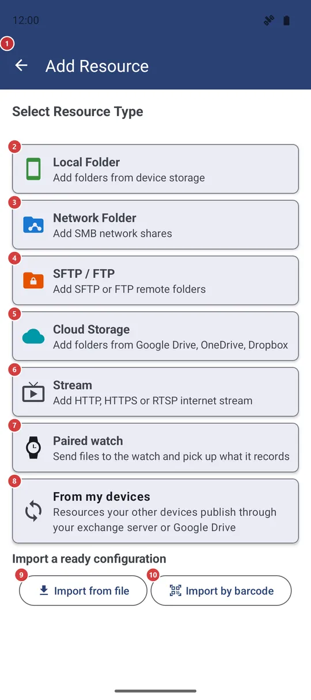
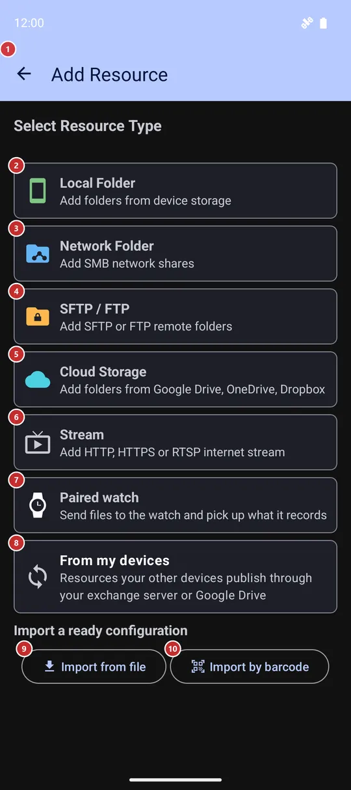

Add Resource
What this is for
Add Resource is where you connect a new place with your files to the app: a folder on the device, a network share, an SFTP or FTP server, a cloud folder, an internet stream or your watch. Pick a type, fill in a short form, and the new resource appears in the list in the resource list.


In this order
- Choose what to add: Local Folder 2 for this device, Network Folder 3 for an SMB share, SFTP / FTP 4, Cloud Storage 5, Stream 6, Paired watch 7 or From my devices 8. Types that are switched off in Settings or missing from your edition are not listed, and if you press Add in the resource list while a type tab is open, that type's form opens at once.
- Device folder: press SCAN 12 to get suggestions or Add Manually 13 to pick a folder yourself, tick what you want in the list 14, then press Add to Resources 11.
- Network share: enter the server address 17, or find it with Scan Network 16. Add the username 18 and password 19, check them with Test connection 20, choose the share with Scan host 21 or type its name 22, then press Add This Resource 27.
- SFTP or FTP: choose the protocol 29, enter the host 30 and the sign-in 31, try Test Connection 32, set the remote path 34 and press Add Resource 36.
- Cloud storage: tap a provider 15, sign in, then open folders with Enter 45 and press Select 46 on the one you want to add.
- Have a ready configuration from the Windows companion? Import from file 9 or Import by barcode 10 saves you typing all of this.
- Back 1 leaves the screen without adding anything that is not saved yet.
The elements
Choosing what to add
1BackLeaves this screen without adding what you have not saved yet.
From the type list or from any form, the button takes you back to the screen you came from, usually the resource list. It does not step back from a form to the type list - to choose another type, open Add again. What you typed in a form and did not add is dropped.
- Shortcut
- Esc / F10
2Local FolderAdds a folder, or a collection of media, from this device.
Opens the Local Folder form: let the app scan for folders that hold media, or pick any folder yourself, a memory card or USB drive included. This card is always here. When every remote source is switched off or missing from your edition, it is the only choice, so the screen skips the type list and opens this form straight away.
3Network FolderAdds a shared folder from a PC or NAS over SMB.
Opens the SMB form, which takes the server address, the sign-in and the share name. The card shows up only when SMB is available in your edition and switched on in Settings, General tab, Remote resources (SMB/(S)FTP/Cloud).
4SFTP / FTPAdds a folder on an SFTP or FTP server.
Opens the SFTP / FTP form, where you choose the protocol and sign in with a password or an SSH key. The card shows up when SFTP or FTP is available in your edition and switched on in Settings, General tab, Remote resources. The two import buttons are repeated at the top of that form.
5Cloud StorageAdds a folder from Google Drive, OneDrive or Dropbox.
Opens the list of cloud providers. Cloud storage is not part of every edition, and the card shows up only while at least one cloud provider is switched on in Settings, General tab, Remote resources.
6StreamAdds an internet stream by its web address.
Instead of a form on this screen, it opens the resource editor for a new stream. There you give the stream a name and its address (http, https or rtsp), and add a comment or a PIN if you want. It then joins your resources like any other.
7Paired watchAdds your paired watch as a resource.
A watch has no address or password, so the app asks for one thing only: a name (the suggestion is Watch). There is just one paired watch; if it is already in your resources you get a note instead of a duplicate. The card shows up only in editions that can work with a watch.
8From my devicesAttaches resources that your other devices publish.
Opens a list of the resources your other devices share through your exchange server or Google Drive. Tick the ones you need and press Attach, or press Attach all listed to take everything on the list. The card is shown together with the SFTP / FTP card, because attached resources connect as SFTP resources.
9Import from fileCreates resources from a configuration file prepared on a PC.
Pick the configuration file that the Windows companion saved. The app reads it, adds new resources, updates the ones that already exist, tells you how many changed and closes this screen. If the file carries no password, a window shows the server and asks for it first. A damaged file, or one made by a newer version, is refused with a message.
10Import by barcodeCreates resources from a QR code shown by the PC companion.
Opens the camera to scan the code, then imports exactly as a file would. A pairing code from another phone's built-in SFTP server works here too - it fills in the SFTP / FTP form for you to check and save. The button is hidden on devices without a camera, VR headsets included; use the Import from file button there.
11Add to ResourcesSaves the folders you ticked in the local list.
The button appears only once the Local Folder form has something in its list. It adds every ticked row as a resource, tells you how many were added and closes the screen. With nothing ticked you get a reminder to select at least one. If your Quick Sort list is full, the resources are still added, but the surplus ones are left out of Quick Sort and the message says how many.
Local folder and cloud storage
12SCANLooks for folders with media on this device.
Builds a list of suggestions: the standard folders, folders that contain media, and collections such as Recent Media or All Music. Folders and collections you have already added are left out. Nothing is saved yet - tick what you want in the list below and press Add to Resources.
13Add ManuallyPicks a folder or a collection yourself.
Opens the Select Folder window. Its Virtual resources buttons (Recent Media, All Music, All Videos, Camera Photos, All Images, All Documents) add that collection at once and close this screen. Quick Select Common Folders offers the device root, DCIM, Pictures, Download, Documents and the WhatsApp, Telegram and Instagram folders; Removable media lists connected cards and drives; a path field (only where the app may read paths) and the system picker cover the rest. A folder you pick lands in the list below already ticked.
When Android first needs All files access, a window explains it and lets you grant it or continue with limited access.
14Resources to add:The folders found or picked, ready to be ticked and added.
Each row has a checkbox, a name you can edit, the path, the file count and one letter per media type - tap a letter to switch that type on or off. Under them sit Mark for Quick Sort, Read-only mode, Scan subdirectories and All Files. A folder that cannot be written to cannot be marked for Quick Sort. The list stays hidden until the first folder arrives.
15Select Cloud ProviderSigns in to Google Drive, OneDrive or Dropbox, then lets you pick a folder.
Every card shows Not connected, or Connected as and the account. Tap a provider: if you have signed in before, you choose an account or Add New Account, otherwise sign-in starts at once. When it succeeds, the folder picker opens (see the last group of this page).
Network share (SMB) form
16Scan NetworkFinds computers with shared folders on your local network.
Opens the Network Discovery window and scans your local network. Pick a computer from its list: its address goes into Server IP and the app lists its shares for you. On some Android versions the app first asks for permission to reach devices on the local network.
17Server IPThe address of the computer or NAS that shares the folder.
Type an IP address. The field starts with the first three numbers of your phone's own address, so usually you only add the last one. An empty or invalid address stops Test connection and Scan host with a message.
18UsernameThe account that is allowed to open the share.
Type the name of the account on the server. A Windows domain, if you use one, goes under Additional Options.
19PasswordThe password of that account.
It is saved with the resource, so the app can connect on its own later. While this form is open, the screen can be hidden from screenshots and the recent apps view, depending on the Secure sensitive screens setting.
20Test connectionChecks the address and the sign-in before you save.
Connects with what you typed and shows Connection Test - Success or Connection Test - Failed in a window. Nothing is saved.
23Resource NameHow the resource is called in your list.
If you leave it empty, the app uses the share name. You can rename the resource later in its editor.
24Content Scanning ConditionsDecides which files of the share the app looks at.
A collapsible section with five choices. Scan subdirectories looks for media in all nested folders. All Files shows every file type, not only media. Show subfolders separately lists subfolders as items you tap to enter. Disable thumbnails shows extension icons instead of previews. Remember file list for this resource keeps a copy of the list on the device for faster loading.
25Media TypesChooses which kinds of files the resource shows.
Tick Images, Videos, Audio, GIFs, Text, PDF, EPUB and DOC - only the types that are turned on in Settings and available in your edition are listed. The button at the top, Custom at first, opens Resource Profile with ready sets: Audio Library, Video Library, Photo Storage, Documents and File Manager Mode. All Files in the section above ticks every type and locks the boxes.
26Additional OptionsOptional extras: Quick Sort, read-only, a comment, a PIN, the domain and the port.
Mark for Quick Sort registers the share as a destination for sorting. Read-only mode blocks copy, move and delete on it, and switches Quick Sort off. Comment is a note for yourself, and PIN Code (Optional) protects the resource with 4-6 digits. Domain is for Windows domain accounts, and Port is 445 unless your server listens elsewhere.
27Add This ResourceSaves the share as a resource.
Saves the sign-in details, adds the resource, shows a message and closes this screen. If the share cannot be reached right away, you are told so, but the resource is still added - check the share name and access, then fix them in the editor.
SFTP / FTP form
28How to publish PC folders to AndroidOpens the guide for publishing PC folders to the app.
The link sits at the top of the form next to the two import buttons and opens the companion's setup guide in your browser. Use it when you have not published any PC folders yet and have nothing to import.
29Select Protocol:Chooses SFTP (secure, over SSH) or plain FTP.
SFTP uses port 22 and FTP uses port 21; the port field follows your choice unless you typed another number. FTP is not encrypted, so prefer SFTP when the server offers it. The Server verification block below applies to SFTP only and is hidden for FTP.
30HostThe name or IP address of the server, and its port.
Type the host name or the address. The port is filled in for you (22 for SFTP, 21 for FTP); change it only if your server listens elsewhere. An empty or invalid host is refused with a message.
31Sign-in methodSigns in with a password or with an SSH key.
Password asks for the username and the password. SSH Key asks for the username and the private key - paste the key text or press Load File to read it from a file - plus a passphrase if the key has one. SSH keys work with SFTP only; FTP always uses a password.
32Test ConnectionChecks the address and the sign-in before you save.
Connects with what you typed and reports success or failure in a window. When the server shows its host key and the verification field is still empty, the window offers Pin Host Key, which copies the key into Server verification for you.
33Server verification (optional)Locks the connection to one genuine server.
Paste the server's host key fingerprint in SHA256 format and the app refuses any other machine that answers at this address. That protects you from someone pretending to be your server. It is optional and applies to SFTP only; the easiest way to fill it is Test Connection and then Pin Host Key.
34Remote PathThe folder on the server that becomes the resource.
For example /home/user/media, or / for everything the account can see. Right below it, Resource Name is the label in your list; if you leave it empty, the app makes one up.
35Scanning, media types and additional optionsThree collapsible sections that work exactly as in the network share form.
Content Scanning Conditions, Media Types and Additional Options hold the same choices as for an SMB share: subdirectories, All Files, thumbnails, media types with the profile button, Quick Sort, Read-only mode, a comment and a PIN. Open them only if the defaults do not suit you.
36Add ResourceSaves the server folder as a resource.
Needs a host and at least one media type; otherwise a message tells you what is missing. After saving, the screen closes. If the server cannot be reached right away, the resource is still added and a message says it is unavailable for now, so you can correct the details later in the editor.
Network Discovery dialog
37Scan statusShows how far the search has come.
While it works, the line shows the part of the network being checked and a counter. When the search ends it says Scan complete.
38Found devicesLists devices on your network that offer file sharing.
Each row shows the device name, its address and the services it offers - SMB, FTP or SFTP. Tap a row to use that device: its address goes into the Server IP field, the window closes and the app lists its shares. If nothing turns up, a note says No devices found yet; make sure you are on the same Wi-Fi and press Scan Again.
39StopStops the search, or starts it again.
While the scan runs, the button reads Stop and ends the search without closing the window. Once the scan has finished or been stopped, it reads Scan Again and searches once more.
40CancelCloses the window without choosing a device.
A scan that is still running is stopped as well.
Cloud folder pickers (Google Drive, OneDrive, Dropbox)
41Pull down to refreshReloads the folders of the level you are on.
Drag the list down to load it again, for example after you created a folder in the cloud. The keyboard does the same.
- Shortcut
- Ctrl + Shift + R / Ctrl + F5
42Add as destinationAlso marks the chosen folder for Quick Sort.
When ticked, the folder you select becomes a Quick Sort destination as well as a resource. Tick it before you press Select; it starts unticked.
43Scan subdirectoriesIncludes everything inside the chosen folder.
When ticked, which it is at the start, media is searched in all folders nested under the one you select. Untick it to look at the top level only.
44Folder listThe folders of your cloud storage, one level at a time.
The toolbar shows the path you are in. Tap a row to go into that folder; each row also has its own Enter and Select buttons, and Back below the top level. If a level has no folders, a note says so.
- Shortcut
- Enter
45EnterOpens the folder to show the folders inside it.
Does the same as tapping the row. Use it to go down to the folder you really want before you press Select.
46SelectAdds this folder to your resources.
Creates a cloud resource from the folder, using your Add as destination and Scan subdirectories choices and the media types enabled in Settings. You see Resource added and land in the resource list. A folder you added before is refused with a note.
- Undo
- Nothing in the cloud changes. To undo it, delete the resource in the resource list; the folder stays where it is.
47BackGoes up one level.
The button appears on rows below the top level. The toolbar arrow and the Back button of the device do the same, and from the top level they close the picker. Esc closes it too.
- Shortcut
- Backspace